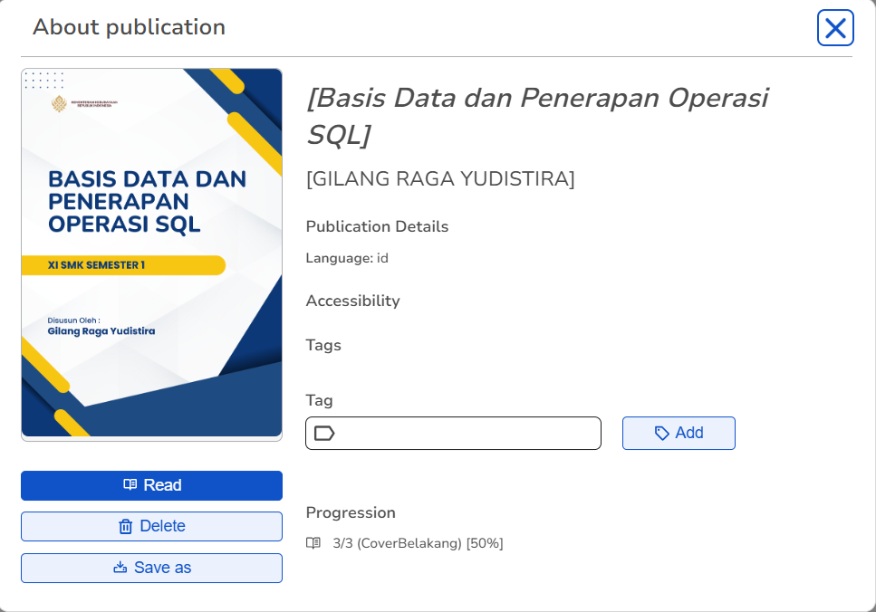

Project Showcase
Kumpulan project yang telah saya buat

E-Modul Basis Data Kelas XI SMK
E-modul ini disusun menggunakan perangkat lunak Sigil untuk mengonversi dokumen Word ke format HTML dan CSS serta dilengkapi dengan daftar isi, metadata, dan sampul (cover). Selain itu, saya juga menyusun Lembar Kerja Peserta Didik (LKPD) sebagai panduan praktikum. Guna meningkatkan aspek interaktif, baik e modul maupun LKPD telah dilengkapi dengan video tutorial serta materi pendukung dalam bentuk audio.

Aplikasi Mobile Jago Sholat
Pengembangan aplikasi “Jago Sholat” dengan bahasa pemrograman java dan kotlin. Pada versi update ini, terdapat penambahan beberapa fitur yang dapat membantu pengguna dalamberibadah secara konsisten, seperti notifikasi suara adzan ketika memasuki jam sholat, fitur kompas yang bisa digunakan untuk menentukan arah kiblat, fitur tasbih digital yang dapat digunakan ketika pengguna tidak membawa tasbih saat beribadah, menu sidebar yang terdapat halaman akun pengguna dan halaman tentang aplikasi.

Aplikasi Dekstop Pemesanan Makanan
Aplikasi GUI berbasis desktop berjudul “Domatio Cafe” ini dikembangkan menggunakan bahasa pemrograman Java dengan menerapkan konsep Object-Oriented Programming (OOP). Aplikasi ini dirancang untuk memudahkan pelanggan dalam memesan makanan secara daring tanpa harus mengantre atau memanggil pelayan

Aplikasi PPDB Siswa SMA/MA
Aplikasi "InSchool" adalah aplikasi desktop berbasis Windows Forms (VB.NET) untuk manajemen PPDB SMA/MA. Aplikasi ini memfasilitasi pendaftaran siswa secara daring dengan dua jalur pilihan yaitu Prestasi dan Domisili. Dilengkapi dengan sistem manajemen data terpusat, admin dapat mengelola informasi pendaftar secara efisien menggunakan fitur CRUD dan fungsi pencarian data yang akurat guna memastikan validitas data siswa baru